A full-stack customer management app in pure Java — no HTML, no JavaScript, no REST layer. Sortable grid, live filtering with signals, a validated form, a real database, and a theme you design in the browser.
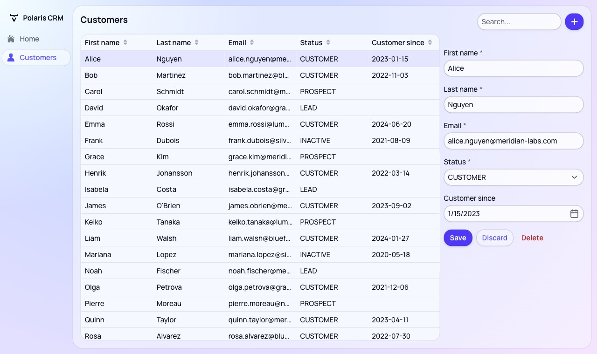
Clone the starter project and run it. Everything below builds on top of it.
git clone https://github.com/drewharvey/vaadin-intro-tutorial.git
cd vaadin-intro-tutorial
./mvnw spring-boot:run # Windows: mvnw.cmd spring-boot:runOpen http://localhost:8080. The first start takes about 30 seconds while Maven downloads dependencies. You'll get a blank page — that's correct. The UI is what you're about to build.
The starter already contains the data layer (Customer, CustomerService, CustomerRepository, and seed data). You ignore it until section 9.
spring-boot:run works, but Java changes need a restart. The plugin's Debug using Hotswap Agent gives you live reload — edit Java, see it in the browser. It's also required for the AI edits in Vaadin Copilot.
Each section below is one chapter of the video, and each has a matching git tag on the tutorial-complete branch. If you get lost, check out that tag and compare:
git fetch origin tutorial-complete
git checkout 05-binder-validation # the code as it stood at that point
git checkout main # back to your own workA view is a Java class the user can navigate to. HomeView is already in the starter: @Route("") maps it to the root URL, and extending VerticalLayout means anything you add stacks top to bottom.
Build a small form to get a feel for components. Every component is a Java object you construct and add().
HomeView() {
var name = new TextField("Name");
add(name);
var dob = new DatePicker("Date of birth");
add(dob);
var save = new Button("Save");
save.addClickListener(e -> {
Notification.show("Details saved!");
});
var discard = new Button("Discard");
discard.addClickListener(e -> {
Notification.show("Details discarded");
});
var buttonsLayout = new HorizontalLayout();
buttonsLayout.add(save, discard);
add(buttonsLayout);
}The two buttons go inside a HorizontalLayout so they sit side by side, and that layout is added to the view — layouts nest inside layouts.
addClickListener takes a Java lambda. When the user clicks, the browser tells the server, your Java runs, and Vaadin sends back only what changed. There's no JavaScript and no endpoint to write.
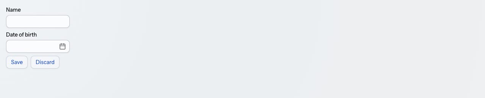
git checkout 01-your-first-viewNow the real app. Create a new view, CustomerListView, on its own route. Grid is Vaadin's data table — you give it typed columns and a list of objects.
@Route("customers")
public class CustomerListView extends VerticalLayout {
private final Grid<Customer> grid = new Grid<>();
private final List<Customer> customers = getSampleCustomers();
public CustomerListView() {
setSizeFull();
grid.addColumn(Customer::getFirstName)
.setSortable(true)
.setHeader("First name");
grid.addColumn(Customer::getLastName)
.setSortable(true)
.setHeader("Last name");
grid.addColumn(Customer::getEmail)
.setSortable(true)
.setHeader("Email");
grid.addColumn(Customer::getStatus)
.setSortable(true)
.setHeader("Status");
grid.addColumn(Customer::getCustomerSince)
.setSortable(true)
.setHeader("Customer since");
grid.setSizeFull();
grid.setItems(customers);
add(grid);
}
private List<Customer> getSampleCustomers() {
return new ArrayList<>(List.of(
new Customer("Alice", "Nguyen", "alice.nguyen@meridian-labs.com",
Status.CUSTOMER, LocalDate.of(2023, 1, 15)),
new Customer("Bob", "Martinez", "bob.martinez@bluefern.io",
Status.CUSTOMER, LocalDate.of(2022, 11, 3)),
new Customer("Carol", "Schmidt", "carol.schmidt@meridian-labs.com",
Status.PROSPECT, null)
));
}
}Each addColumn takes a method reference — a getter on Customer. That's what makes the grid type-safe: rename getEmail and this stops compiling, rather than silently rendering blanks.
setSortable(true) gives every column click-to-sort headers, handled in memory for you.
ArrayList, which matters shortly — filtering and adding both operate on it until the database arrives in section 9.
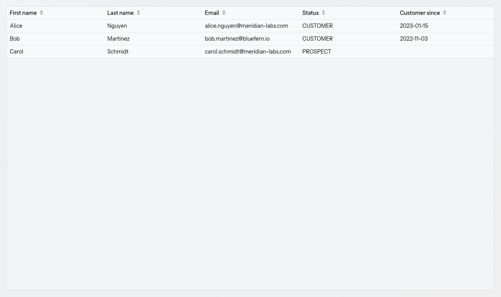
git checkout 02-data-in-a-gridA search box needs somewhere to keep "what is currently typed". That's UI state, and in Vaadin the reactive way to hold it is a signal.
Declare the signal as a field, bind the field to it, and register an effect that re-runs whenever the signal changes.
private final ValueSignal<String> searchValue = new ValueSignal<>("");
public CustomerListView() {
setSizeFull();
var search = createSearch();
configureGrid();
add(search, grid);
}
private TextField createSearch() {
var search = new TextField();
search.setPlaceholder("Search...");
search.setValueChangeMode(ValueChangeMode.LAZY);
search.bindValue(searchValue, searchValue::set);
Signal.effect(search, () -> updateCustomerList(searchValue.get()));
return search;
}
private void updateCustomerList(String query) {
var filtered = customers;
if (!query.isEmpty()) {
var lower = query.toLowerCase();
filtered = customers.stream()
.filter(c -> c.getFirstName().toLowerCase().contains(lower)
|| c.getLastName().toLowerCase().contains(lower)
|| c.getEmail().toLowerCase().contains(lower)
|| c.getStatus().name().toLowerCase().contains(lower))
.collect(Collectors.toCollection(ArrayList::new));
}
grid.setItems(filtered);
}Nothing wires the text field to the grid directly. The field writes into searchValue; the effect reads it and refreshes the grid. Add another component that depends on the same signal and it updates too, with no extra plumbing.
get() / peek() rule — the one thing to remember about signals.Signal.effect, use get(). That is what subscribes the effect to the signal.peek(). It reads the value without subscribing.get() outside a reactive context throws IllegalStateException.
ValueChangeMode.LAZY keeps the server from being hit on every keystroke — it waits for a short pause in typing. Without it, filtering fires per character.
The last two housekeeping moves of this section: extract the grid setup into configureGrid(), and move the search field creation into createSearch(). The constructor becomes a summary of the view rather than a wall of setup.
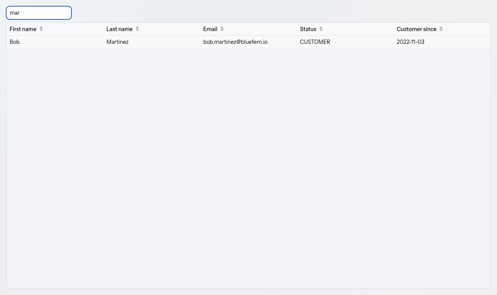
mar filters the grid live — the signal drives it.git checkout 03-filtering-with-signalsSelecting a row should reveal a details form. That's a second piece of state — which customer is being edited — so it gets a second signal.
private final ValueSignal<Customer> editedCustomer = new ValueSignal<>(null);
public CustomerListView() {
setSizeFull();
var search = createSearch();
configureGrid();
var form = createForm();
var content = new HorizontalLayout(grid, form);
content.setSizeFull();
add(search, content);
}
private void configureGrid() {
// ...columns as before...
grid.asSingleSelect().bindValue(editedCustomer, editedCustomer::set);
}
private FormLayout createForm() {
var firstName = new TextField("First name");
var lastName = new TextField("Last name");
var email = new EmailField("Email");
var status = new ComboBox<Status>("Status");
status.setItems(Status.values());
var customerSince = new DatePicker("Customer since");
var form = new FormLayout(
firstName,
lastName,
email,
status,
customerSince
);
form.setWidth("300px");
form.bindVisible(editedCustomer.map(customer -> customer != null));
return form;
}Two bindings do the work. grid.asSingleSelect().bindValue(...) pushes the selected row into the signal. form.bindVisible(...) derives the form's visibility from that signal — no customer, no form.
map creates a derived signal. editedCustomer.map(c -> c != null) is a read-only signal of booleans that recomputes whenever editedCustomer changes. You bind components to derived values instead of writing show/hide logic by hand.
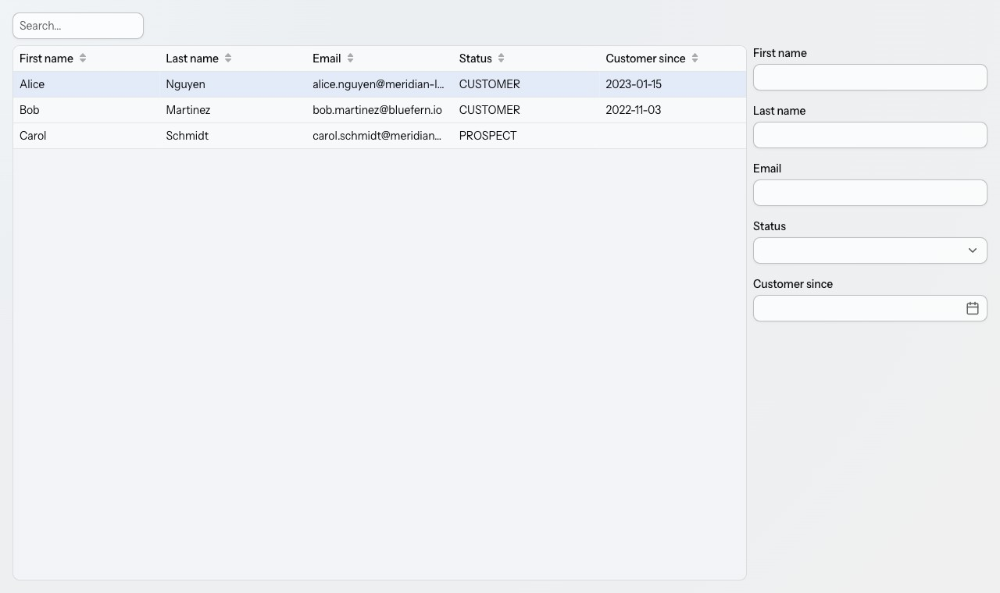
git checkout 04-details-formYou could call setValue on five fields and read them back one by one. Binder does it declaratively instead: connect each field to a getter/setter pair and it handles both directions plus validation.
var binder = new Binder<Customer>();
binder.forField(firstName)
.asRequired("First name is required")
.bind(Customer::getFirstName, Customer::setFirstName);
binder.forField(lastName)
.asRequired("Last name is required")
.bind(Customer::getLastName, Customer::setLastName);
binder.forField(email)
.asRequired("Email is required")
.bind(Customer::getEmail, Customer::setEmail);
binder.forField(status)
.asRequired("Status is required")
.bind(Customer::getStatus, Customer::setStatus);
binder.bind(customerSince, Customer::getCustomerSince, Customer::setCustomerSince);
Signal.effect(form, () -> binder.setBean(editedCustomer.get()));The effect is the bridge: when editedCustomer changes, the binder gets the new bean and the fields fill in. Note it calls get(), because it's inside an effect.
asRequired adds the asterisk, the message, and the check. customerSince is bound without it — the field is genuinely optional, and prospects have no date yet.
Signal.effect(form, ...) ties the effect's lifecycle to that component. When the form is detached, the effect is cleaned up with it — no leaks, no stale subscriptions.
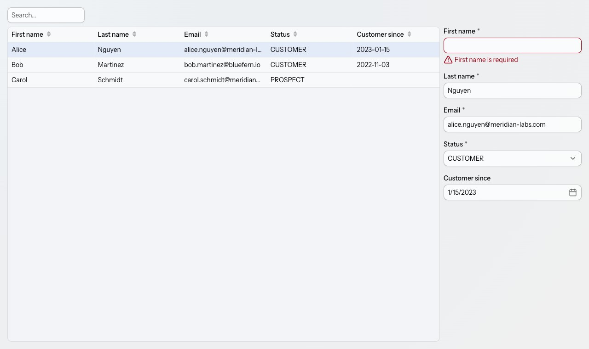
git checkout 05-binder-validationsetBean is unbuffered: every keystroke writes straight through to the object. Usually you want the opposite — edits held until the user commits them. That's buffered mode, and it's the difference between setBean and readBean.
private final Binder<Customer> binder = new Binder<>();
// in createForm()
var saveBtn = new Button("Save");
saveBtn.addClickListener(e -> {
save();
});
var discardBtn = new Button("Discard");
discardBtn.addClickListener(e -> binder.readBean(editedCustomer.peek()));
var buttons = new HorizontalLayout(saveBtn, discardBtn);
// the effect now READS the bean instead of setting it
Signal.effect(form, () -> binder.readBean(editedCustomer.get()));
private void save() {
try {
binder.writeBean(editedCustomer.peek());
updateCustomerList();
} catch (ValidationException ex) {
// the fields already show their own error messages
}
}
private void updateCustomerList() {
updateCustomerList(searchValue.peek());
}Three methods, three jobs:
readBean — copy the object's values into the fields. Edits stay in the form.writeBean — validate, then copy the fields back into the object. Throws if anything is invalid.readBean again — re-read the untouched object and the edits vanish.get() — it's reactive and must re-run on change. The click listeners use peek() — they run once, on demand, outside any reactive context. Swapping them is the most common signals mistake.
writeBean throws ValidationException, every offending field is already displaying its own message. There is nothing useful to add, so save simply doesn't happen.
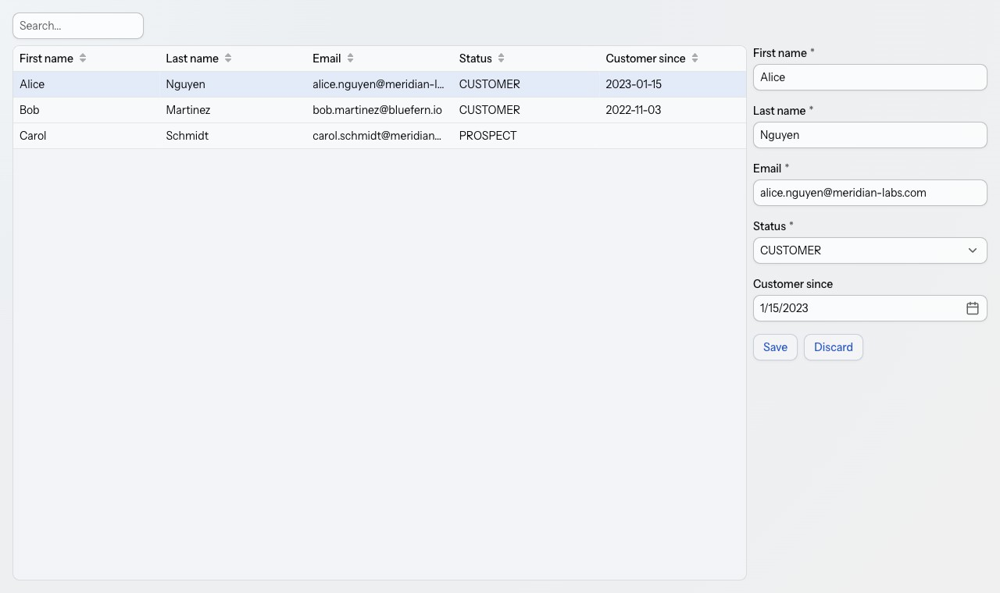
git checkout 06-buffered-save-discardEditing works. Creating doesn't — there's no way to get an empty form. Give the view a proper toolbar: a title, the search field, and an add button.
private HorizontalLayout createToolbar() {
var title = new H3("Customers");
var search = new TextField();
search.setPlaceholder("Search...");
search.setValueChangeMode(ValueChangeMode.LAZY);
search.bindValue(searchValue, searchValue::set);
Signal.effect(search, () -> updateCustomerList(searchValue.get()));
var addBtn = new Button(VaadinIcon.PLUS.create());
addBtn.addClickListener(e -> addCustomer());
var layout = new HorizontalLayout(title, search, addBtn);
layout.setWidthFull();
layout.setFlexGrow(1, title);
return layout;
}
private void addCustomer() {
editedCustomer.set(new Customer());
}Adding a customer is one line: put a brand-new Customer into the signal. The form is already bound to that signal, so it opens, empty, ready to fill. No separate "create mode" flag.
Save needs a small change too — a newly created customer isn't in the list yet:
var customer = editedCustomer.peek();
binder.writeBean(customer);
// add customer if new
if (!customers.contains(customer)) {
customers.add(customer);
}
updateCustomerList();setFlexGrow(1, title) makes the title absorb the spare width, pushing search and the add button to the right edge.
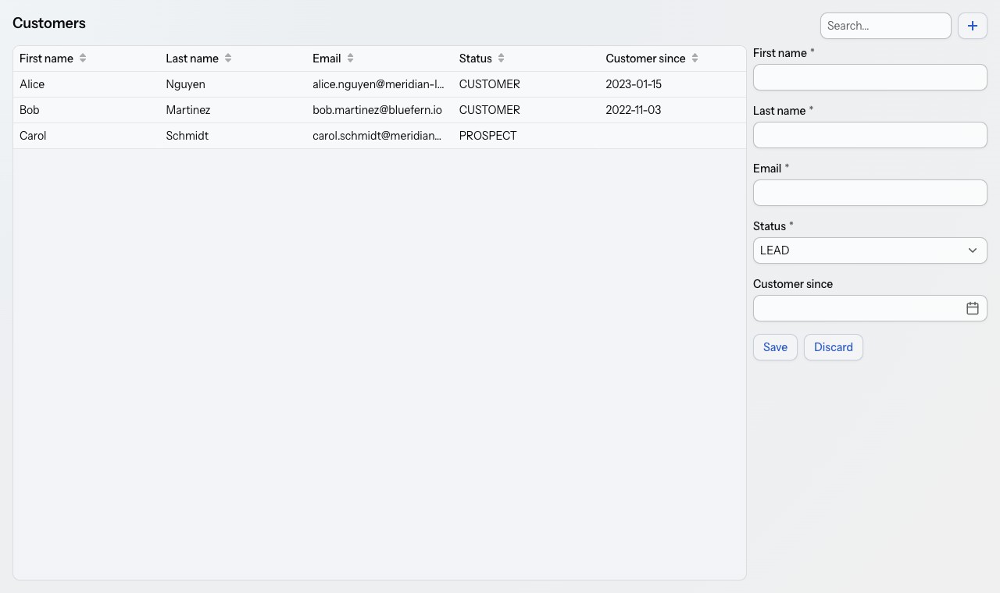
Customer into the signal — the form does the rest.git checkout 07-toolbar-and-addingDelete completes CRUD, and destructive actions deserve a confirmation. ConfirmDialog is a component you configure and open.
var deleteBtn = new Button("Delete");
deleteBtn.addClickListener(e -> confirmDelete());
deleteBtn.bindEnabled(editedCustomer.map(customer -> customer != null));
var buttons = new HorizontalLayout(saveBtn, discardBtn, deleteBtn);
private void confirmDelete() {
var customer = editedCustomer.peek();
var dialog = new ConfirmDialog();
dialog.setHeader("Confirm delete customer");
dialog.setText("Are you sure you want to delete this %s %s?"
.formatted(customer.getFirstName(), customer.getLastName()));
dialog.setCancelable(true);
dialog.setConfirmText("Delete");
dialog.addConfirmListener(e -> {
customers.remove(customer);
updateCustomerList();
});
dialog.open();
}setCancelable(true) adds the Cancel button — without it the dialog only offers confirm. bindEnabled greys the Delete button out when nothing is selected, again derived straight from the signal.
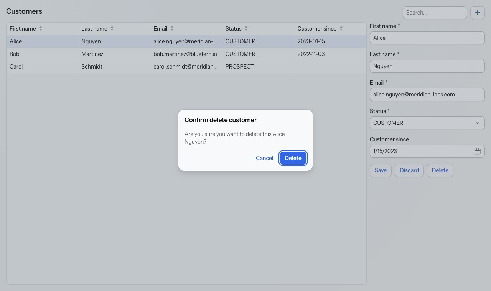
git checkout 08-delete-confirm-dialogTime to delete getSampleCustomers(). CustomerService has been sitting in the starter all along — a normal Spring service over a JPA repository. Ask for it in the constructor and Spring injects it.
private final CustomerService customerService;
public CustomerListView(CustomerService customerService) {
this.customerService = customerService;
// ...
}
private void updateCustomerList(String query) {
var filtered = customerService.findAll();
if (!query.isEmpty()) {
var lower = query.toLowerCase();
filtered = filtered.stream()
.filter(c -> /* ...same predicate... */ true)
.collect(Collectors.toCollection(ArrayList::new));
}
grid.setItems(filtered);
}Save and delete now go through the service, and the in-memory add/remove disappears entirely:
// in save()
var customer = editedCustomer.peek();
binder.writeBean(customer);
customerService.save(customer);
updateCustomerList();
// in confirmDelete()
customerService.delete(customer);
updateCustomerList();With a database there's a reliable way to tell a new customer from an existing one — a saved entity has an id, an unsaved one doesn't:
private boolean isNew(Customer customer) {
return customer != null && customer.getId() == null;
}
var saveBtn = new Button();
saveBtn.bindText(editedCustomer.map(customer -> isNew(customer) ? "Create" : "Save"));
deleteBtn.bindEnabled(editedCustomer.map(customer -> !isNew(customer)));map over the same signal.
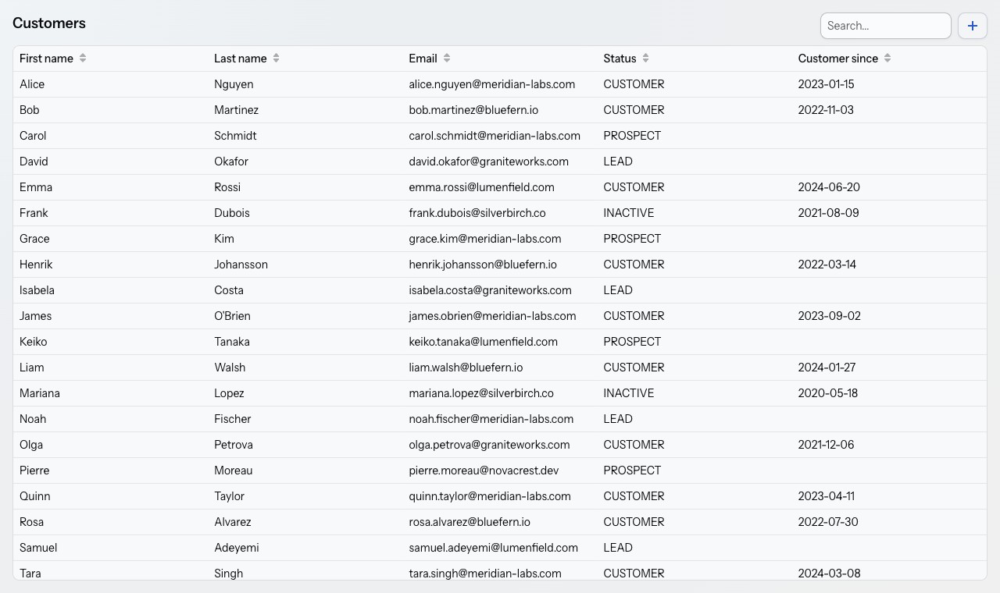
git checkout 09-real-backendTwo views, no way to move between them. A layout is the frame that wraps every view — header, drawer, navigation.
@Layout
public class MainLayout extends AppLayout {
public MainLayout() {
setPrimarySection(Section.DRAWER);
var logo = VaadinIcon.VAADIN_H.create();
var appName = new Span("Polaris CRM");
var header = new HorizontalLayout(logo, appName);
header.setPadding(true);
var nav = new SideNav();
nav.addItem(new SideNavItem("Home", HomeView.class, VaadinIcon.HOME.create()));
nav.addItem(new SideNavItem("Customers", CustomerListView.class, VaadinIcon.USER.create()));
addToDrawer(header, nav);
}
}One annotation does the wiring. @Layout with no arguments makes this the shell for every route in the app — you don't list views or touch @Route.
SideNavItem takes a view class, not a URL string. The route is read from the class's own @Route. Change the route and navigation follows automatically, and a typo becomes a compile error instead of a broken link.
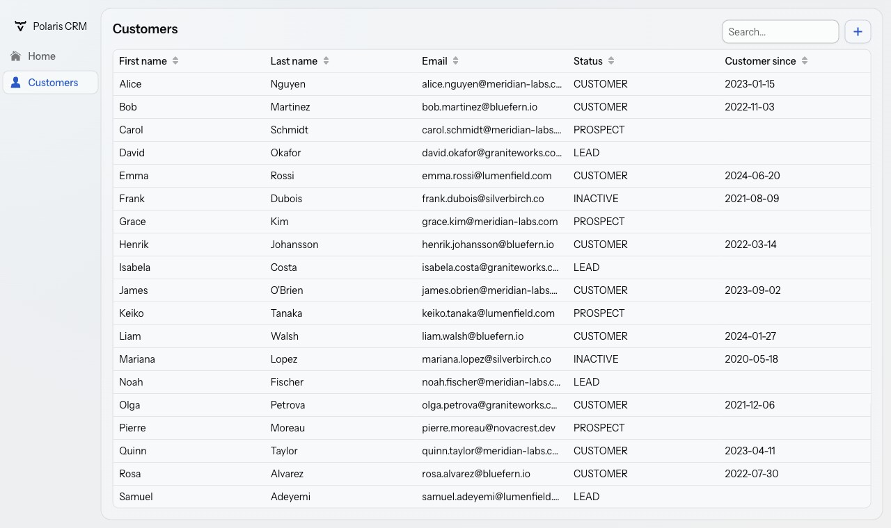
git checkout 10-app-shell-navigationBefore writing any CSS, use what the components already offer. Theme variants are the built-in visual options — a primary button, an error button, a tertiary one.
addBtn.addThemeVariants(ButtonVariant.PRIMARY);
saveBtn.addThemeVariants(ButtonVariant.PRIMARY);
deleteBtn.addThemeVariants(ButtonVariant.ERROR, ButtonVariant.TERTIARY);
form.getStyle().setPaddingTop("30px");
dialog.setConfirmButtonTheme("primary error");Variants combine: ERROR plus TERTIARY gives a red, borderless Delete — visually quieter than Save while still reading as dangerous. The dialog's confirm button takes the same idea as a string.
getStyle() is the escape hatch for one-offs. A single padding value doesn't deserve a CSS file. Reach for it when the change is genuinely local — anything reusable belongs in the stylesheet.
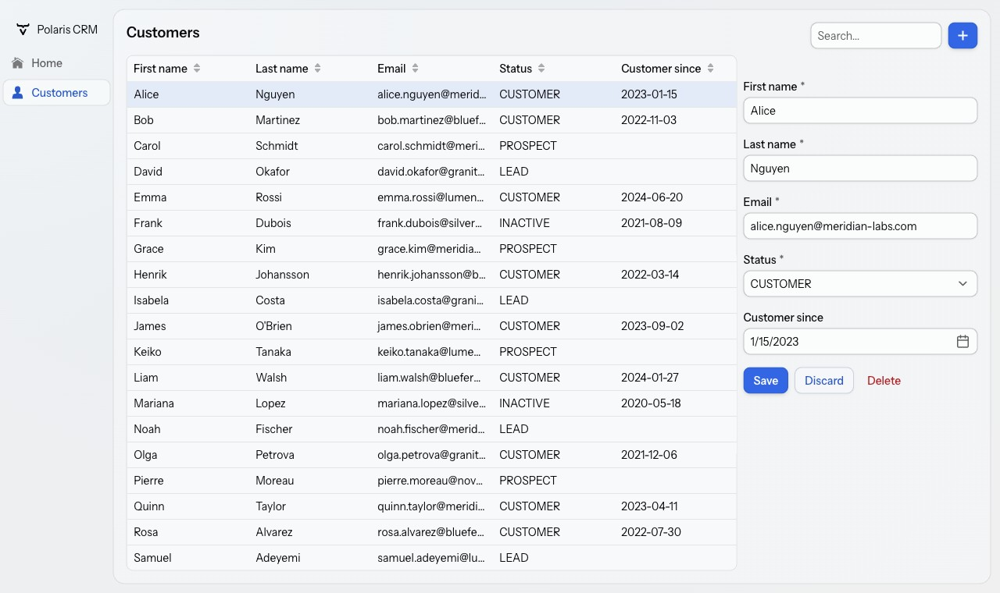
git checkout 11-theme-variantsWhen a variant doesn't exist for what you want, write CSS. Add a class name in Java, then style it in styles.css.
var appName = new Span("Polaris CRM");
appName.addClassNames("app-name");.app-name {
font-weight: bold;
}While you're here, let the app follow the operating system's light or dark preference:
@ColorScheme(ColorScheme.Value.LIGHT_DARK)Application.java change.
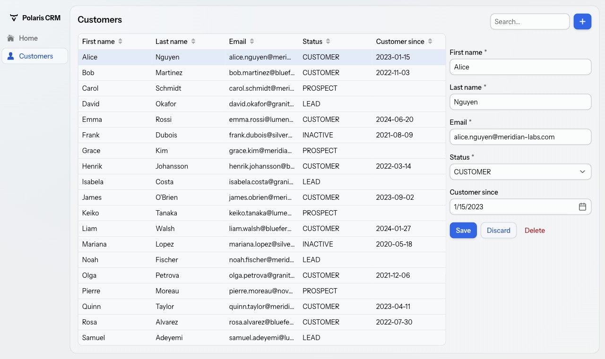
git checkout 12-custom-css-themesHand-writing a whole design system would take the rest of the day. Vaadin's Aura theme editor lets you pick colours, fonts, roundness and density in the browser, then hands you a block of CSS custom properties to paste in.
@import url('https://fonts.googleapis.com/css2?family=Manrope:wght@200..800&display=swap');
html {
--aura-accent-color-dark: #615FFF;
--aura-accent-color-light: #4F39F6;
--aura-background-color-dark: #0C0B2F;
--aura-background-color-light: #D0DAFF;
--aura-base-font-size: 15;
--aura-base-radius: 7;
--aura-content-color-scheme: light dark;
--aura-font-family: 'Manrope', var(--aura-font-family-system);
--aura-notification-color-scheme: light dark;
--aura-surface-level: 2;
color-scheme: light dark;
}
html {
--aura-font-weight-regular: 500;
--aura-font-weight-medium: 600;
--aura-font-weight-semibold: 700;
--vaadin-button-font-weight: 600;
--vaadin-input-field-value-font-weight: 500;
--vaadin-checkbox-font-weight: 600;
--vaadin-radio-button-font-weight: 600;
--vaadin-message-name-font-weight: 600;
--vaadin-grid-header-font-weight: 600;
}
vaadin-card,
vaadin-dashboard-widget {
--aura-surface-level: 4;
}Not one component was touched. Every button, field, dialog and grid in the app picks up the new accent colour, typeface and corner radius, because they all read the same custom properties.
git checkout 13-theme-generator · final state: git checkout finalA full-stack CRM: a sortable, filterable grid, a validated form with buffered save and discard, create and delete backed by a database, an app shell with navigation, and a custom theme. All in Java, across three files you wrote yourself.
ValueSignal, map and effect; there is more, including ListSignal and computed signals.